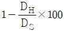
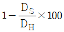
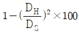
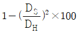
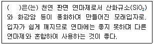
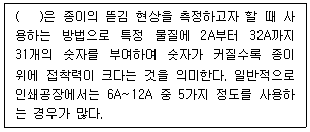
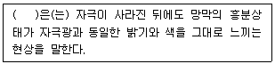
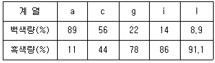
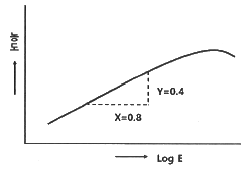

인쇄산업기사 (2019-08-04 기출문제)
1과목: 인쇄공학
1. 양장제책에 있어 등(back)에 가로로 몇 개의 줄이 도드라져 나온 것은?
- 동정(outside)
- 돋음띠(band)
- 귀받이(corner)
- 머리띠(head band)
(정답률: 40%)

2. 민인쇄(solid printing)에서 잉크 전이량이 많으면 나타나는 현상으로 볼 수 없는 것은?
- 건조가 느리다.
- 광택이 증가한다.
- 불완전 피복이 된다.
- 뒤묻음이 많이 생긴다.
(정답률: 30%)
3. 레이저 방식의 디지털 인쇄기로 인쇄할 때 인쇄 단계를 바르게 나열한 것은?
- 충전 → 노출 → 현상 → 이송 → 정착
- 충전 → 노출 → 현상 → 정착 → 이송
- 노출 → 충전 → 이송 → 현상 → 정착
- 노출 → 충전 → 현상 → 정착 → 이송
(정답률: 알수없음)
4. 플렉소그래피(flexography) 언와인드 장력 장치의 제동부에서 장력범위와 롤 지름 빌드업과의 비율이 얼마나 초과하면 문제가 발생하는가?
- 1 : 1
- 1 : 10
- 1 : 50
- 1 : 100
(정답률: 알수없음)
5. 오프셋 인쇄기의 배지부와 비교한 급지부에 요구되는 사항으로 가장 거리가 먼 것은?
- 조작의 용이함
- 오염 방지의 효율성
- 종이의 변화에 대한 대응력
- 고속인쇄에서 정확성과 안정성
(정답률: 알수없음)
6. 양장 제책에서 책등 양 끝의 귀를 만드는 작업은?
- 굳힘(gluing)
- 배킹(backing)
- 원형내기(rounding)
- 책끝장식(edge decoration)
(정답률: 알수없음)
7. 두루마리 오프셋 인쇄기중 초퍼 접지기에서 배지된 접장을 가지런히 하는 정돈 장치는?
- 삼각판
- 스태커
- 접지통
- 니핑 롤러
(정답률: 30%)
8. 베어러 초과가 1mm이고, 판통 커트가 1.8mm이며 사용되어 지는 판 두께는 0.3mm일 때 판통의 패킹량(mm)은?
- 3.1
- 2.1
- 2.5
- 2.8
(정답률: 알수없음)
9. 그라비어 인쇄기의 잉크 장치가 만족시켜야 할 조건으로 옳은 것은?
- 잉크의 점도는 항상 변화되기 쉽도록 해야 한다.
- 빠른 건조를 위해 용제 증발이 최대화되어야 한다.
- 판의 잉크 홈(ink cell) 안에 잉크가 충분히 채워지도록 해야 한다.
- 잉크 교환이 복잡하더라도 이물질이 들어가지 않아야 한다.
(정답률: 알수없음)
10. 컬러 인쇄를 하는 인쇄실의 조명조건으로 가장 적합한 것은?
- 색온도가 5000K이고, 연색평가지수가 90~95인 조명
- 색온도가 6000K이고, 연색평가지수가 85~90인 조명
- 색온도가 7000K이고, 연색평가지수가 93~95인 조명
- 색온도가 8000K이고, 연색평가지수가 95~100인 조명
(정답률: 알수없음)
11. 표면에 친수성기를 배향시켜서 공기 중 습기를 흡수하는 계면활성제는?
- 습윤제
- 연화제
- 용화제
- 균염제
(정답률: 알수없음)
12. 인쇄 잉크에 순간적으로 외력을 가하면 원상태로 돌아가지만 천천히 외력을 가하면 변형된 상태 그대로 있는 현상은?
- 택(tack)
- 유동성(fluidity)
- 요변성(thixotropy)
- 점탄성(viscoelasticity)
(정답률: 알수없음)
13. PP, PET 같은 플라스틱 필름 표면에 인쇄할 경우 잉크가 쉽게 떨어질 수 있다. 이러한 현상이 일어날 때 가장 먼저 해야 할 사항은?
- 잉크의 농도 조절
- 플라스틱 필름 교체
- 플라스틱 필름 표면 세척
- 잉크와 플라스틱 필름의 계면 현상 분석
(정답률: 알수없음)
14. 항습을 유지하는 실내에서 온도가 내려가면 상대습도는 어떻게 변하는가?
- 변화없다.
- 하락한다.
- 상승한다.
- 알 수 없다.
(정답률: 알수없음)
15. 인쇄 작업 전 작업복장의 점검사항으로 옳지 않은 것은?
- 넥타이를 제대로 매고 있는가?
- 작업복 소매 등이 늘어져 있지 않는가?
- 미끄러지기 쉬운 신발을 신지 않았는가?
- 수건이나 걸레를 허리에 차고 있지 않는가?
(정답률: 알수없음)
16. 오프셋 인쇄물에서 콘트라스트(Contrast, %)를 구하는 식으로 옳은 것은? (단, DS는 민인쇄부의 인쇄농도, DH는 망점부의 인쇄농도를 나타낸다.)




(정답률: 알수없음)
17. 겉빠짐(snow flake)현상의 대책방안으로 옳지 않은 것은?
- 축임물의 양을 늘려준다.
- 잉크의 조성을 수정한다.
- 인쇄실의 온·습도를 적정하게 유지한다.
- 소량의 알코올을 첨가하여 수폭을 넓힌다.
(정답률: 30%)
18. 인쇄물의 망점 크기가 인쇄판의 원래 망점 크기보다 커지는 현상은?
- 고스트(ghost)
- 모틀링(mottling)
- 더블링(doubling)
- 도트게인(dot gain)
(정답률: 40%)
19. 하프톤 인쇄 시 망점 면적율이 70%인 계조영역의 TV(tone value, %)는?
- 0.7
- 15
- 30
- 70
(정답률: 알수없음)
20. 오프셋 인쇄에서 유화 현상이 과도하게 발생할 경우 잉크의 유동성과 전이율에 대한 설명으로 옳은 것은?
- 물방울이 잉크의 유동을 증가시키므로 인쇄물이 선명해진다.
- 물방울이 잉크의 유동을 증가시키므로 잉크의 전이가 향상된다.
- 물방울이 잉크의 유동을 방해하므로 잉크 전이가 나빠진다.
- 물방울이 잉크의 유동을 방해하므로 인쇄물이 선명해진다.
(정답률: 알수없음)
2과목: 인쇄재료학
21. 일정한 조건에서 섬유 현탁액의 탈수성을 측정한 값인 여수도의 측정법은?
- °SR법
- PFP법
- 갈바노법
- 라인케법
(정답률: 20%)
22. 평판재료에 사용하는 알루미늄판의 조성 중 인장강도(kg/mm2)와 신장률(%)의 물리적 조건으로 옳은 것은?
- 인장강도 15 이상, 신장률 12 이상
- 인장강도 15 이상, 신장률 4 이상
- 인장강도 23 이상, 신장률 12 이상
- 인장강도 23 이상, 신장률 4 이상
(정답률: 알수없음)
23. 다음 ( ) 안에 알맞은 용어는?

- 알런덤(alundum)
- 규사(silica sand)
- 카보런덤(carborundum)
- 금강사(garnet sand)
(정답률: 알수없음)
24. 다음 중 평판제판용 무기 감광 재료로 주로 사용하는 것은?
- 중크롬산염 콜로이드 감광액
- 중탄산염 콜로이드 감광액
- 디아조화합물
- 디아지드화합물
(정답률: 20%)
25. 어떤 종이의 크기가 7880mm×1091mm 이고 무게가 86.0496g 일 경우의 종이의 평량은 약 몇 g/m2 인가?
- 70
- 80
- 85
- 100
(정답률: 30%)
26. 인쇄용지에서 70% 이상의 화학 펄프에 재생펄프를 넣어 만든 것으로 서적 등의 본문 용지로 많이 사용되는 것은?
- 중질지
- 매트지
- 갱지
- 아트지
(정답률: 알수없음)
27. 고무롤러에 대한 설명으로 옳지 않은 것은?
- 잉크의 전이성이 좋아야 한다.
- 니트릴 고무가 많이 사용된다.
- 그라비어 잉크 고무롤러의 경도는 55~60 정도이다.
- 그라비어 압통 고무롤러의 경도는 20~40 정도이다.
(정답률: 알수없음)
28. 햇빛에 의해 검게 변하나 어두운 곳에서 다시 흰색으로 되돌아오는 성질의 흰색 안료는?
- 산화티탄
- 아연화
- 리토폰
- 알루미나화이트
(정답률: 알수없음)
29. 초지 공정 중 와이어상에서 지필(web)을 형성하는 방법에 따라 초지기를 구분한 것에 해당하지 않는 것은?
- 오리피스식(orifice)
- 장망식(fourdrinier)
- 환망식(cylinder)
- 쌍망식(twin wire)
(정답률: 알수없음)
30. 잉크의 물성 중 잉크를 교반하거나 기계적인 힘을 가하면 유동성이 증가되고, 방치해두면 원래의 상태로 되돌아오는 성질은?
- 택
- 예사성
- 유동성
- 틱소트로피
(정답률: 알수없음)
31. B열 본판에서 B5판 용지는 몇 매가 나올 수 있는가?
- 12매
- 16매
- 32매
- 48매
(정답률: 알수없음)
32. 다음 중 산화중합 건조에 대한 설명으로 옳지 않은 것은?
- 축임물의 유화가 건조를 지연시킨다.
- 습도가 높아질수록 건조가 느려진다.
- 인산이나 인산염이 다량 들어가면 건조가 빨라진다.
- 종이 면이 산성일수록 건조가 늦어진다.
(정답률: 알수없음)
33. 그라비어용 구리판에 사용되는 부식액은?
- 질산
- 황산
- 염산
- 염화제2철액
(정답률: 30%)
34. 인쇄 잉크 제조 시 안료의 분산정도를 시험하는 장치는?
- grindmeter
- spreadmeter
- inkometer
- tackoscope
(정답률: 알수없음)
35. 다음 ( ) 안에 알맞은 용어는?

- 데니슨 왁스법
- 적하법
- 덴소미터 측정법
- 뷰렛 측정법
(정답률: 알수없음)
36. 잉크 피막이 열수증기에 관계하여 응고 건조되는 것은?
- 속건성 잉크
- 콜드세트 잉크
- 스팀세트 잉크
- 왁스세팅 잉크
(정답률: 알수없음)
37. 인쇄회로기판(PCB)에 사용되는 원자재인 동박 적층판의 종류가 아닌 것은?
- 페놀판
- 에폭시판
- 아크릴판
- 폴리에스테르판
(정답률: 알수없음)
38. 이소프로필알코올(I.P.A)을 축임물로 사용할 경우의 장점이 아닌 것은?
- 표면장력이 낮고 축임물에 엷은 막을 형성한다.
- 축임물의 냉각 효과가 있다.
- 설치비 및 운영비가 저렴하다.
- 증발속도가 빠르고 종이 면에서 잉크의 건조가 빠르다.
(정답률: 알수없음)
39. 유리, 도자기, 플라스틱 등의 절연체면에 스크린 인쇄하여 경화, 건조시켜 전기적 회로를 구성하는데 사용하는 잉크는?
- 자성잉크
- 도전성잉크
- 액정잉크
- OCR잉크
(정답률: 알수없음)
40. 다음 필름 중 가시광전역에 감광하는 것은?
- 오르토리스 필름
- 하이스피드 오르토리스 필름
- 팬크로매틱리스 필름
- 명실 밀착 필름
(정답률: 10%)
3과목: 인쇄색채학
41. 먼셀의 색상환에 대한 설명으로 옳은 것은?
- 다홍, 초록, 남색을 기준으로 하는 색체 원추체와 색상환 체계를 갖고 있다.
- 불, 공기, 물, 흙의 고유색인 빨강, 초록, 파랑, 노랑 4색을 기본으로 하고 있다.
- 빨강, 노랑, 초록, 파랑, 보라를 기준으로 그 색들의 물리 보색인 5색을 더하여 배열시켰다.
- 최초의 색입체를 고안하여 모든 색상과 색조(Tone) 등이 포함될 수 있도록 구성하였다.
(정답률: 알수없음)
42. 측색기를 사용하여 투과광의 경우는 투과곡선을, 반사광의 경우는 반사곡선을 그려 개개의 곡선에서 색의 요소를 측정하는 측색방법은?
- 발염법
- 분광방법
- 명도측정방법
- 혼합등색방법
(정답률: 34%)
43. 측색용 보조 표준광에 해당하는 것은?
- A
- C
- D50
- D65
(정답률: 알수없음)
44. 다음 ( )안에 알맞은 용어는?

- 정의 잔상
- 부의 잔상
- 애브니 효과
- 베졸토-브리케 현상
(정답률: 알수없음)
45. 색입체에 대한 설명으로 옳은 것은?
- 색은 외부로 나갈수록 채도는 높아진다.
- 색상은 원으로, 명도는 방사선으로, 채도는 직선으로 각각 배열한다.
- 명도는 중심축과 일치하게 위로 올라가면 저명도, 내려가면 고명도가 된다.
- 채도는 중심축 축에 들어가면 고채도, 바깥둘레도 나오면 저채도가 된다.
(정답률: 20%)
46. 인쇄잉크의 색상오차에 대한 설명으로 옳은 것은?
- 잉크별 색상오차는 모두 동일하다.
- Cyan잉크의 색상오차가 제일 크다.
- Yellow잉크의 색상오차가 제일 크다.
- Magenta잉크의 색상오차가 제일 크다.
(정답률: 알수없음)
47. 측색장치의 측정척도이며 측정 및 분석결과에 관한 불확실성의 정도를 나타내는 것은?
- 정밀도
- 선예도
- 재현성
- 불확도
(정답률: 알수없음)
48. 오스트발트표색계 색채표시법에서 '171c'의 순색량은? (단, 각 계열의 백색량, 흑색량은 아래 표와 같다.)

- 4.71%
- 17%
- 47.1%
- 64.3%
(정답률: 알수없음)
49. 영-헬름홀쯔(Young-Helmholtz) 색각설에서 원색의 조건과 거리가 먼 것은?
- 더 이상 측색할 수 없는 색
- 더 이상 분광할 수 없는 색
- 다른 색광을 혼합하여 만들 수 없는 색
- 원색을 모두 혼합하였을 때 백색광이 되는 색
(정답률: 20%)
50. 다음 중 감법혼색의 원리를 적용한 것이 아닌 것은?
- 점묘화법
- 다색 인쇄
- 컬러 슬라이드
- 컬러 영화필름
(정답률: 알수없음)
51. 다음 중 명도가 가장 높은 색은?
- 분홍
- 보라
- 백색
- 연분홍
(정답률: 알수없음)
52. 빛의 3언색인 R, G, B의 3색에 의한 혼합으로 이루어지는 색재현을 무엇이라 하는가? (단, R : REd, G : Green, B : Blue 이다.)
- 색분법
- 가색혼합
- 색상환
- 감색혼합
(정답률: 알수없음)
53. 감법혼색의 특징이 아닌 것은?
- 색을 혼합할수록 흰색에 가까워진다.
- 색을 혼합할수록 명도와 채도가 저하된다.
- 컬러사진이나 수채화에서 사용되는 혼색원리이다.
- 보색 관계에 있는 두 색을 혼합하면 회색 또는 무채색이 된다.
(정답률: 알수없음)
54. 빛의 좋바으로 만들어지는 모든 색과 눈에서 감지되는 색이 등색이 되는 지점을 등색함수로 수치화시킨 X, Y, Z 라는 3개의 자극치로 규정한 표색계는?
- CIE 표색계
- Munsell 표색계
- Ostwald 표색계
- PCCS 표색계
(정답률: 알수없음)
55. 컬러 인쇄물의 망점인쇄는 어떤 방식의 색재현 원리가 이용되는가?
- 가색혼합
- 회전혼합
- 병치혼합과 가색혼합
- 병치혼합과 감색혼합
(정답률: 알수없음)
56. 모니터 화면의 픽셀이 계단 또는 톱니모양으로 나타나는 현상은?
- 블러링(burring)
- 블랜딩(blending)
- 앨리어싱(aliasing)
- 안티앨리어싱(anti-aliasing)
(정답률: 20%)
57. 다음 중 조명이 물체의 색감에 영향을 미치는 현상으로 동일한 물체색이라도 광원의 분광에 따르 다른 색으로 지각되는 현상은?
- 색순응
- 연색성
- 항상성
- 조건등색
(정답률: 알수없음)
58. 어두운 장소에서 밝은 장소로 바뀔 때 민감도가 증가하는 것으로 추상체의 활동에 의해 일어나는 반응은?
- 암순응
- 명순응
- 색순응
- 무채순응
(정답률: 알수없음)
59. 밝은 노란색 또는 어두운 노란색이라고 표현하는 것은 색의 3속성 중 어떤 성질을 말하는가?
- 색상
- 명도
- 강도
- 채도
(정답률: 알수없음)
60. 다음 중 보색관계가 옳은 것은?
- 녹색(green)과 노랑(yellow)
- 파랑(blue)과 빨강(red)
- 노랑(yellow)과 시안(cyan)
- 빨강(red)과 시안(cyan)
(정답률: 알수없음)
4과목: 사진제판공학
61. 다음 중 플레이트 가이드부, 프린트 게인부, 프린트 슬러부로 구성된 품질 관리용 스케일은?
- 스타 타깃
- 시그널 스트립
- 도트게인 스케일
- 플레이트 컨트롤 웨지
(정답률: 10%)
62. 8bit 디지털 망점에서 50% 망점면적은 몇 개의 픽셀이 흑화된 것을 의미하는가?
- 50개
- 128개
- 256개
- 400개
(정답률: 알수없음)
63. PS판의 특징으로 옳지 않은 것은?
- 망점 재현성이 우수하다.
- 표면의 경도가 높고 내쇄력이 크다.
- 제판 처리상의 불안정 요소가 안정된 판이다.
- 제판 공정이 복잡하여 표준화 작업이 어렵다.
(정답률: 알수없음)
64. 분광 분포곡선이 주광(daylight)과 매우 흡사하며, 색분해 및 컬러 촬영용 외에 색평가용 표준광원으로 사용되는 광원은?
- 할로겐등
- 크세논등
- 텅스텐등
- 초고압수은등
(정답률: 20%)
65. ICC 프로파일 규격에서는 색영역 바깥쪽의 색상을 어떻게 재현할 것인가에 관해서 4가지 방법을 제안하고 있는데 이 중에서 용지의 색상을 고려한 색역 사상(gamut mapping)방법은?
- 지각(perception)
- 고채도(saturation)
- 절대측색(absolute colorimetry)
- 상대측색(relative colorimetry)
(정답률: 알수없음)
66. 제판 작업 시 빛쬠량이 달라지는 요소가 아닌 것은?
- 광원의 세기
- 감광막의 두께
- 망점의 크기
- 필림의 농도 및 온·습도
(정답률: 10%)
67. 교정인쇄를 하는 목적과 가장 거리가 먼 것은?
- 고객에게 승인을 얻기 위하여
- 인쇄 샘플제작을 위하여
- 경함과 감각을 얻기 위하여
- 제판공정 상태를 점검하기 위하여
(정답률: 알수없음)
68. 반사 농도계를 Yellow 잉크의 농도를 측정하고 할 때 사용해야할 필터는?
- Blue 필터
- Green 필터
- Red 필터
- Black 필터
(정답률: 알수없음)
69. 전자출판의 특성으로 옳지 않은 것은?
- 정보가 전자적 방법으로 기록되어있거나 표시하도록 만들어져 있다.
- 정보 내용의 다중화 즉, 멀티미디어 속성을 가진다.
- 정보 제공자로부터 수신자로 일방적인 정보전달 특성을 가진다.
- 2차가공의 용이성, 정보 선택성 등의 고유한 특성을 가진다.
(정답률: 알수없음)
70. 다음 감광재료의 특성곡선에서 감마(γ) 값은?

- 0.4
- 0.6
- 0.5
- 1.2
(정답률: 10%)
71. 다음 중 광원 스텍트럼의 각 파장과 자극의 관계를 나타낸 것은?
- 특성곡선
- 솔라리제이션
- 비시감도곡선
- 분광에너지 분포
(정답률: 알수없음)
72. 다음 오목판 제판법 중 화학적 방법으로 제작된 것은?
- 애쿼틴트 오목판
- 메조틴트 오목판
- 뷰린 오목판
- 드라이포인트 오목판
(정답률: 알수없음)
73. 다음 교정 인쇄법 중 다색 사진교정법에 해당되지 않는 것은?
- 오버레이법
- 서프린트법
- 전사법
- 브라운 인화법
(정답률: 알수없음)
74. 컬러 스캐너의 출력장치에서 Ar 레이저의 출력감도 파장으로 가장 적합한 것은?
- 488nm
- 633nm
- 680nm
- 820nm
(정답률: 알수없음)
75. 평판 스캐너가 드럼 스캐너에서 공통적으로 사용되며 아날로그 신호를 디지털 신호로 바꾸어 주는 장치는?
- RIP
- A/D 컨버터
- CCD
- PMT
(정답률: 알수없음)
76. 사진법을 이용한 색분해 방법 중 400~500nm의 파장을 통과시켜 분해 필름을 감광시키는 필터는?
- red 필터
- blue 필터
- green 필터
- black 필터
(정답률: 20%)
77. 스캐너의 기본구성으로 처리가 끝난 전기신호를 다시 빛으로 바꾸어 기록재료에 노출하는 부분은?
- 출력 주사부
- 전자 계산부
- 입력 주사부
- 광전 변환부
(정답률: 알수없음)
78. 필름의 감광막에 강한 빛이 닿게 될 경우 빛이 감광막 내부에서 확산되어 그 주변까지 감광시키는 현상은?
- 왜곡수차(distortion)
- 이미지세터(image setter)
- 이레이디에이션(irradiation)
- 이미테이션레더(imitation leather)
(정답률: 알수없음)
79. 할로겐화은 유제층의 헐레이션(halation)현상과 관계가 없는 것은?
- 빛이 직접 닿지 않았던 부분에서도 현상을 하면 흑화가 일어난다.
- 화상의 선예도를 증가시켜 하이라이트부의 농담 표현을 손상시킨다.
- 감광층을 투과한 빛이 지지체의 경계면이나 이면으로부터 반사되어 감광층을 감광시킨다.
- 필름 뒷면에 유색 헐레이션 방지층을 도포하여 현상과정 중에 이를 제거한다.
(정답률: 알수없음)
80. 그라비어 제판에 대한 설명으로 옳지 않은 것은?
- 컨벤셔널 그라비어는 깊이가 다른 오목점으로 농담을 나타낸다.
- 직접 망점 그라비어는 깊이가 같고 망점의 대소도 농담을 나타낸다.
- 그라비어의 감광재료는 젤라틴과 안료, 중크롬산칼륨으로 이루어져 있다.
- 그라비어 제판은 일반적으로 사진 볼록판 방식이다.
(정답률: 알수없음)